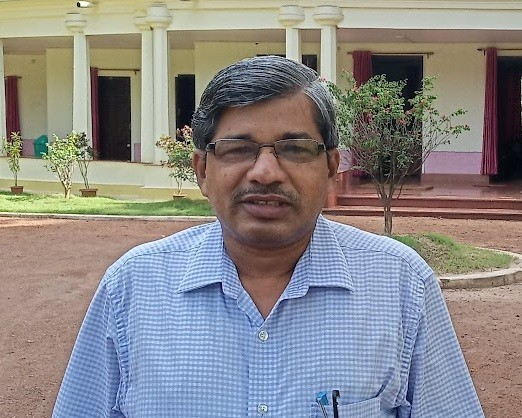

Professor, Department of English
Banaras Hindu University, Varanasi

Prof. Prakash Chandra Pradhan is a distinguished scholar, teacher, researcher and author with over 39 years of academic experience. His work spans Postcolonial Studies, Diaspora Studies, Ecocriticism, Gender Studies, Cultural Studies, Trauma Studies, Translation Studies and Indian Writing in English.
Resistance and Literature in a Global Context (Springer, 2024)
Cultural and Literary Traditions in India (Cambridge Scholars Publishing, 2024)
V. S. Naipaul and Postcolonialism (Atlantic, 2018)
D. H. Lawrence's Novels: A New Historical Approach (2009)
Email: prakashcpradhan@gmail.com
Department: English
Institution: Banaras Hindu University
Location: Varanasi, India